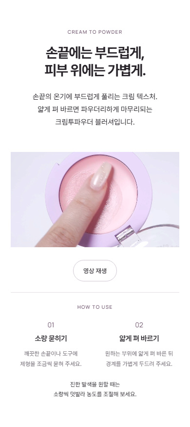
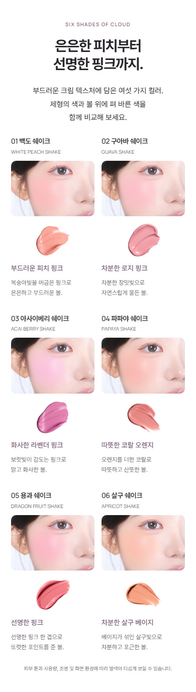
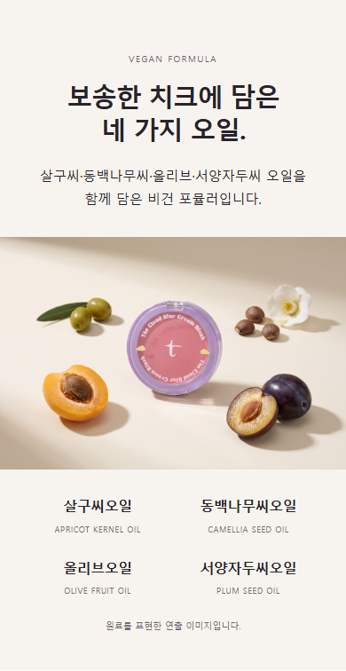
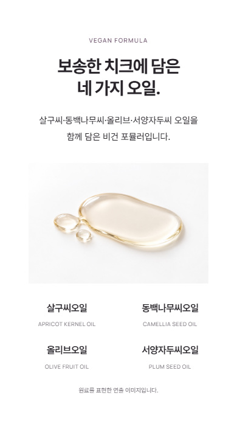

2026.10.19 · 선택한 방향 반영 · 최종 시각 검토용
모델 구간 없이,
제품과 제형에 집중했어.
발색샷은 그대로 유지하고, 독립 모델 구간을 뺐습니다. 탁한 과일 정물은 맑은 오일 연출로 바꾸고, 같은 영상 장면을 다시 쓰던 사용법 사진은 정리했습니다.
01 · 제형에서 실제 발색으로 바로
새로 찾은 모아 후보도 최종 상세에는 넣지 않았습니다. 모델 사진으로 흐름을 멈추지 않고, 실제 제형을 확인한 다음 컬러를 고르게 했습니다.


02 · 원료 이미지는 맑고 가볍게


화이트 바탕과 부드러운 그림자로 바꾸고, 제품 용기와 과일을 덜어냈습니다. 오일 이미지는 네 가지 성분 설명을 보조하며, 실제 블러셔 제형이나 보송한 마무리의 증거로 쓰지 않습니다.
03 · 같은 장면은 한 번만
하단 사용법의 두 사진은 앞쪽 영상에서 각각 1.3초·5.3초에 뽑은 장면이었습니다. 두 사진과 별도 사용법 구간을 없애고, 소량 묻히기·얇게 펴 바르기·덧바르기 안내를 영상 아래에 모았습니다.
히어로의 제품 2개 연출과 마지막 6색 컬렉션은 서로 다른 사진으로 유지했습니다. 발색 사진을 다시 크게 늘려 넣거나, 다른 제품을 든 모델 컷으로 대체하지 않았습니다.
검토 근거와 확인 범위
실제 파일과 영상 출처를 대조하고 독립 검토를 거쳤습니다. 마지막으로 선택해 준 ‘모델 구간 없이 제품·제형 중심’ 방향을 우선 반영했습니다.
320·390·600·860·1440px에서 이미지 로딩과 가로 넘침을 확인했습니다. 원본 발색 구간·히어로·마지막 제품·공식 정보는 이전과 일치하며, 영상 재생 버튼도 확인했습니다.
기술 확인이나 독립 검토의 동의는 디자인 승인을 대신하지 않습니다.